LINE 商家貼文・地圖那幾張 2026-09-08 停車那張定案 door-c；第三部分是新的「怎麼到斗六」路線圖
第一、二部分是小格左那一張（到了斗六停哪裡）；
第三部分是 09-08 新開的路線圖（怎麼到斗六），還沒定案。
⭐ 定案是 door-c：門口那張告示的版本，不放 QR、
拿掉「紅線」「開單」那兩句——那兩句一走，地圖從 520 長到 926px。
底下還留著走到這裡的每一格，以及先做的那個「站上簡易地圖」的版本（第二部分）。
⚠ 檔名還是流水號（door-…）——挑定了再改成拿得出去的名字。
一、門口那張告示的版本⭐ 定案：Ⓒ 不放 QR ＋ 前兩句拿掉
地圖、提醒、三張停車場卡全部是門口那張 A4 告示本人——
產生器把 drafts/door-notice/ 跑起來，再把它的東西讀進 1080 的方畫布。
旋轉、街名重排、路線圓點、指北針一個字都沒有重做。
⚠⚠ 而它在方畫布上比站上那張好排：門口那版把地圖轉了 90 度，
所以地圖是橫的（1.27）而不是站上那張直的（0.903）。
⭐ 定案door-c不放 QR、拿掉「紅線」「開單」那兩句

兩句一走、三顆碼一走，那些高度全部給了地圖：
460 → 926px（整整大一倍），左右已經頂到版面的內距（各 40px）。
⚠⚠ 換來的是地圖上的字在小格上也大一倍：街名 6.6 → 13.2px、
P 代號 6.3 → 12.5、綠塊「芳仁牙醫」5.1 → 10.2、巷名 3.8 → 7.5。
⚠ 綠塊裡是「芳仁牙醫」不是門口那張的「現在位置」——
看貼文的人不在那裡，那四個字會被讀成「你現在的位置」。
先看它在主頁上長怎樣大格＝看診時間（已定稿）／小格左＝這一張

⚠⚠ 這一張不能放大格：大格只看得到中間 537 列，
這一張的內容佔 27~1053——上下都會被切掉。
⚠ 小格裡放的是下一節那把尺的建議格（Ⓒ），不是上面那張。
⚠⚠ 在小格的實際大小（410px）左＝現況 中＝Ⓒ 建議 右＝Ⓔ 最大

這一排才是判準。上面那兩句提醒 11.4px、
地圖上的街名 13.2px（第一次過 10px）——那兩項三張都一樣。
⚠ 差在最下面那一排：左邊 9.9／8.4px、中間 12.9／11.0、右邊 15.6／13.7。
代價是地圖 998 → 840 → 730。下一節那把尺就是這件事。
⚠ 下排那兩行的字級要挑你說有點小 —— 量出來你是對的
| 哪一格 | 名字 | 距離 | 地圖 |
|---|---|---|---|
| Ⓐ 現況 | 9.9px | 8.4px | 998 |
| Ⓑ ×1.10 | 10.6px | 9.1px | 998 |
| Ⓒ ×1.30 建議 | 12.9px | 11.0px | 840 |
| Ⓓ ×1.45 | 14.0px | 12.1px | 762 |
| Ⓔ ×1.60 | 15.6px | 13.7px | 730 |
名字與距離那兩欄是在小格 410px 上量的（這一線的判準一直是
「小格上小於 10px ＝ 等於沒寫」）——現況兩行都沒過，你看出來的是真的。
⚠⚠ 但字一大，那一排就變高，而高度是從地圖借的（最右欄）。
這一格沒有免費的答案，所以是一把尺。
⚠ 中間還有一道硬牆：三個名字原本是不折行的，×1.15 就開始互相碰到——
要再大只能讓名字折行（Ⓒ 以上都是），那又會再多吃一截地圖。

Ⓑ ×1.10——完全不花錢：Ⓐ 與 Ⓑ 的地圖都已經 頂到左右內距（998／可用 1000），那一排再高一點也還借得到高度。 但只有名字過線、距離仍然 9.1px。

Ⓒ ×1.30（建議）——兩行第一次都過 10px。
名字開始折行，所以號碼牌改成自己一列：不這樣做的話三格會各折在不同的地方
（一格牌子在字旁邊、一格在字上面），看起來就是亂的。地圖 998 → 840。
⚠⚠ P1 的斷點是自己指定的，不是交給瀏覽器折。只有 P1 放不下（10 個字），
瀏覽器會折成「中華路停車／場」，一個字被丟到下一行；名字裡本來就有一個
全形破折號（壹車房－中華路停車場），那才是它自己的斷點——
現在讀起來是壹車房／中華路停車場／190 公尺・步行 3 分鐘三行。
⚠ 破折號已經拿掉（你指定的）——換行本來就把「分兩截」講完了，
留在行尾反而像沒收完。
⚠⚠ 只有畫在圖上的那一份拿掉：底下那塊「詳情」的字與門口那張紙
一個字都沒動，那兩份是一行，破折號在那裡仍然是唯一的分隔。
⚠ 產生器有一道守門在數「自己斷的每一段有沒有被再折」，被折就停下來。


Ⓓ ×1.45（地圖 762）與 Ⓔ ×1.60（地圖 730）。
再往上那一排就比地圖還搶眼了。
⚠ 而且到這兩格，連「140 公尺・步行 2 分鐘」那一行也開始自己折
（「2 分鐘」掉到第二行）——名字的斷點我們指定得了，那一行沒有可以指定的斷點。
指北針要多小要挑上面每一張都已經是中間那一格
你說「指北針的標示和北可以小一點」——照做了，而且再給你上下各一格。
⚠ 門口那張紙上那一組是為了站在門口、離半公尺挑的；這張圖要在小格 410px 上看，
同一組就顯得吵。門口那張一個字都沒動，只有這張圖換一格。
⚠ 指北針畫在地圖那張圖裡面，所以換大小不會動到版面——三張的字、留白、
那一排停車場逐格相同。
| 哪一格 | 整組高 | 「北」 | 地圖 |
|---|---|---|---|
| Ⓝ1 門口那張的大小 | 35.2px | 10.2px | 834 |
| Ⓝ2 小一格（現在這樣） | 30.5px | 8.8px | 840 |
| Ⓝ3 再小一格 | 26.0px | 7.5px | 848 |
前三欄是在小格 410px 上量的。⚠ 「北」那個字三格都在 10px 以下——
但它和停車場的名字不一樣：那個字不必讀，形狀認得出來就好（旁邊還有一支箭頭），
所以這一格不套那條 10px 的線。
⚠ 地圖反而愈小的指北針愈寬一點（834 → 848）：指北針在圖裡面，它一收，
整張圖就瘦一點、同樣的高度放得下更寬的圖。

Ⓝ1——門口那張 A4 用的那一組。

Ⓝ3——再小一格。Ⓝ2（現在這樣）就是上面那幾張。
地圖要多大要挑指北針能給的已經給完了，剩下的要從留白拿
⚠⚠ 先講一件事：指北針收小換到的只有 4px（地圖 754 → 758）。
它畫在地圖那張圖裡面，收小只讓那張圖瘦一點點。
⚠⚠⚠ 真正卡住地圖的是高度——地圖是「填滿剩下的高度」，
左右反而還空著各 121px。所以地圖要大，只能從這一頁自己的上下留白拿。
⚠ 指北針那條帶子不可以拿來抵：門口那張的規則是「指北針不可以壓在路上」
（你 8/23 指定的），那條帶子是它的家、不是浪費。
| 哪一格 | 留白／段距 | 地圖 | 小格留白 |
|---|---|---|---|
| Ⓜ1 原本 | 44／18 | 758 | 17.0px |
| Ⓜ2 | 34／14 | 804 +6% | 13.2px |
| Ⓜ3 你選的 | 26／11 | 840 +11% | 10.3px |
| Ⓜ4 | 18／8 | 876 +16% | 7.1px |
四格只有留白不一樣，字級、那一排停車場、指北針全都是同一組。
✅ 你選了 Ⓜ3 —— 已經寫成預設，這一頁上面每一張圖都換過去了
（所以上面那幾格的地圖尺寸和你昨天看到的不一樣，那是這一改帶來的）。
⚠ Ⓜ4 的上面那兩句幾乎貼到邊。
⚠ 已知的不對稱：左右的內距沒有跟著收（一直是 40 ＝ 小格 15.2px）——
收它一點都換不到地圖（地圖是高度在卡，左右本來就有空），
收了只會讓上面那兩句變長。所以 Ⓜ3 之後會變成「上下比左右緊一點」，那是刻意的。
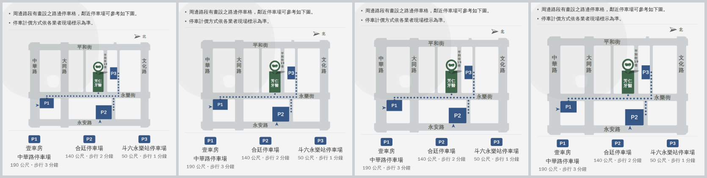
這一排是在小格的實際大小（410px）比的：左起 Ⓜ1／Ⓜ2／Ⓜ3／Ⓜ4。
Ⓜ3 就是上面那幾張——地圖 840×655。下面三格留著當對照。
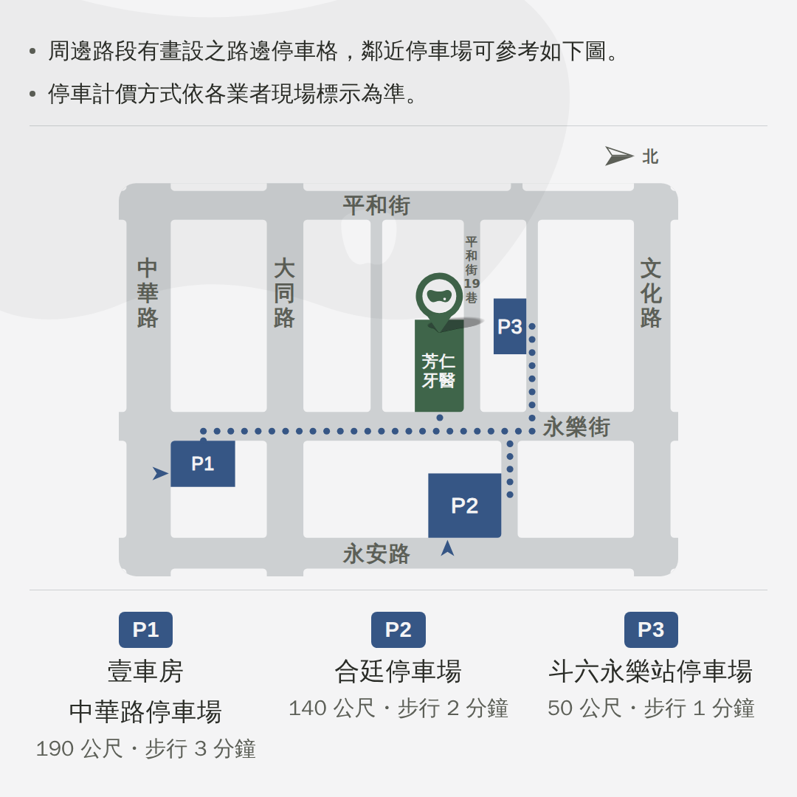
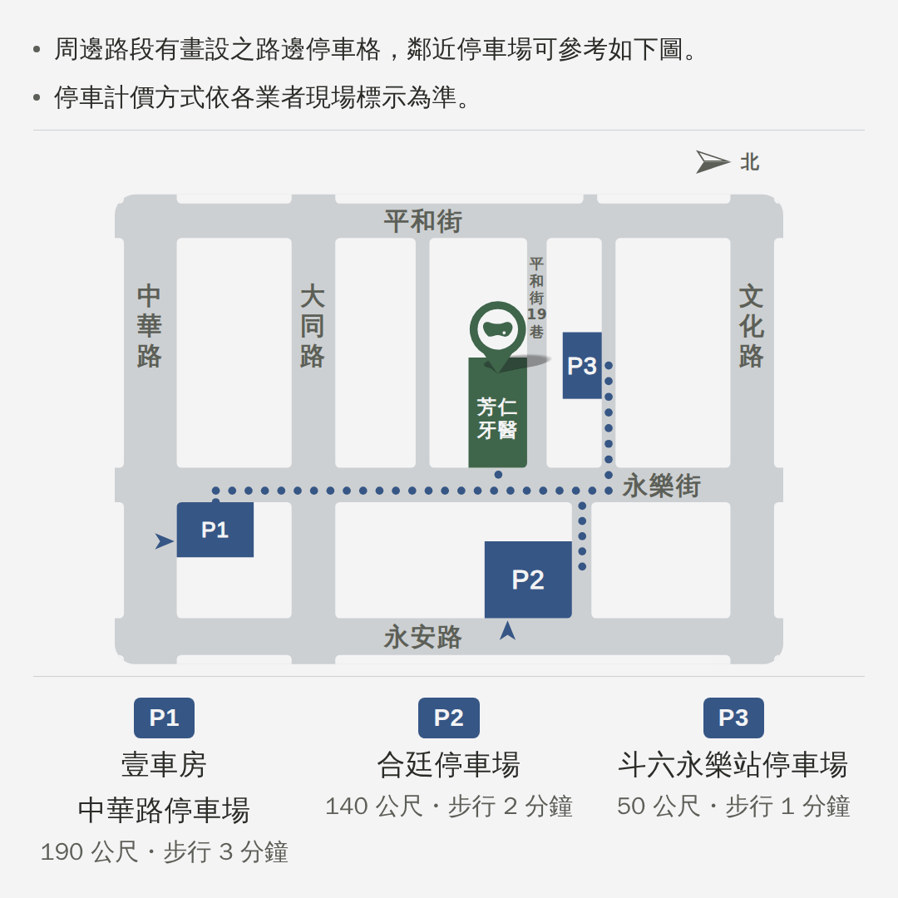
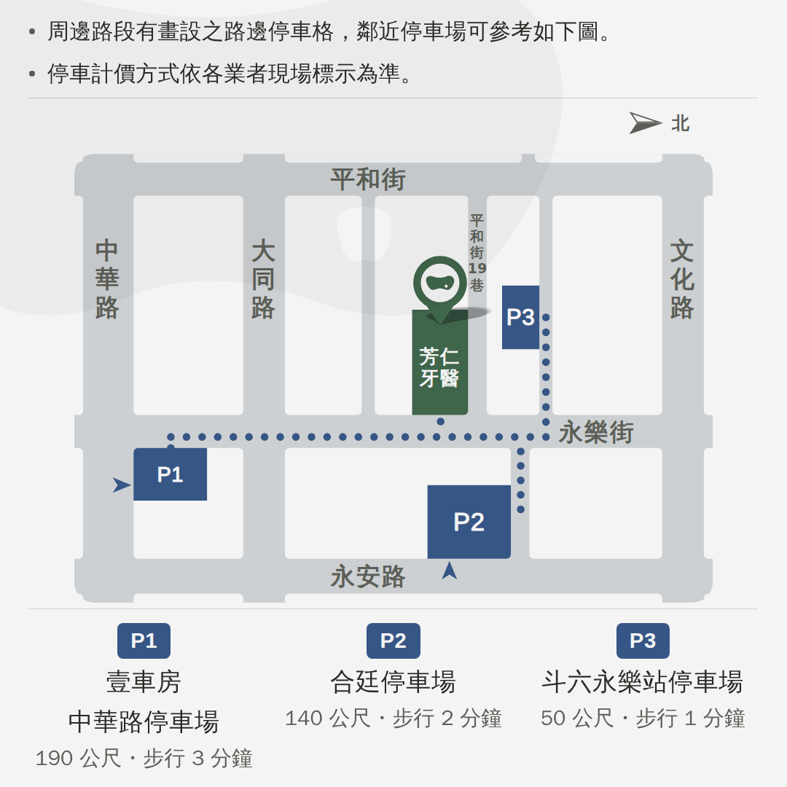
Ⓜ1（原本，地圖 758）、Ⓜ2（804）與 Ⓜ4（876）。
浮水印要挑壓左上（你指定的）／濃度／換哪一顆 logo
照做了：同一顆圓 logo（shape-r3c1）、同樣 660px、
同樣的墨色與很低的濃度——沒有新增任何顏色，也沒有多一個檔案
（形狀從 brand/shapes/ 讀回來）。
⚠⚠ 壓左上是你說的，而且量出來成立：門診表那一張的右下角只有「國定假日…」
與電話兩行；這一張的右下角是三張停車場卡——名字、號碼牌、距離共九段字，
是整張圖上唯一要逐字讀的東西。左上那兩句只有兩行、行長不一，右邊本來就空著。
⚠ 切出去的量現在用比例寫（寬的 9.1%、高的 7.6% ＝ 門診表那一張的同一組比例），
所以換形狀會自動跟著換，不必再挑一次位置。
⚠⚠ 有一件和門診表不一樣：那一張的浮水印壓在表的後面；
這一張的地圖是一張不透明的圖，擺在後面會被那個長方形切掉一大塊——
圓形沿著地圖的邊突然消失，看起來就是壞的。所以這裡是壓在最上面、濃度更低。
在這麼淡的一端，兩種做法讀起來一樣。
⚠ 那三顆 QR（其他版本才有）自己拉到浮水印前面——碼上面不可以壓任何東西，
而且壓了畫面上看不出來，只有拿解碼器掃才知道。
① 換哪一顆 logo要挑寬度按「墨的面積」等重換算，不是同寬
| 哪一格 | 形狀 | 長寬比 | 畫出來 |
|---|---|---|---|
| Ⓛ1 現在這顆 | r3c1 | 1.00 | 660×660 |
| Ⓛ2 | r1c1 | 1.00 | 679×679 |
| Ⓛ3 | r3c2 | 1.00 | 673×674 |
| Ⓛ4 | r2c2 | 1.33 | 762×572 |
| Ⓛ5 站上頁首那顆 | r1c2 | 2.03 | 952×469 |
⚠⚠ 換形狀不可以沿用同一個寬度：九顆的長寬比 1.00~3.08、
墨佔外框 59.6~83.2%，同寬的話細長那幾顆會輕很多（約診卡那一輪已經量過這件事）。
所以寬度是按墨的面積等重換算的——五格看起來一樣重，只是形狀不同。
⚠ 剩下那三顆沒有列進來：長寬比 3.08 的（r1c3／r2c3／r3c3）等重之後要
1193~1364px，比畫布 1080 還寬，整顆會變成一條橫的糊帶。
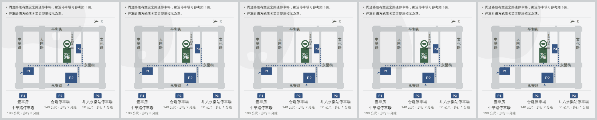
這一排是在小格的實際大小（410px）比的：左起 Ⓛ1～Ⓛ5。 ⚠ 這麼淡的濃度，在 410px 上五格幾乎分不出來——差別要在下面 1080 的原圖看。
Ⓛ2 ＝ r1c1（679×679）。
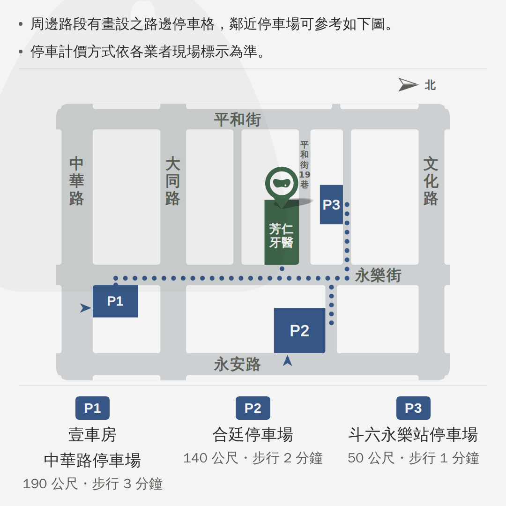
Ⓛ3 ＝ r3c2（673×674）。
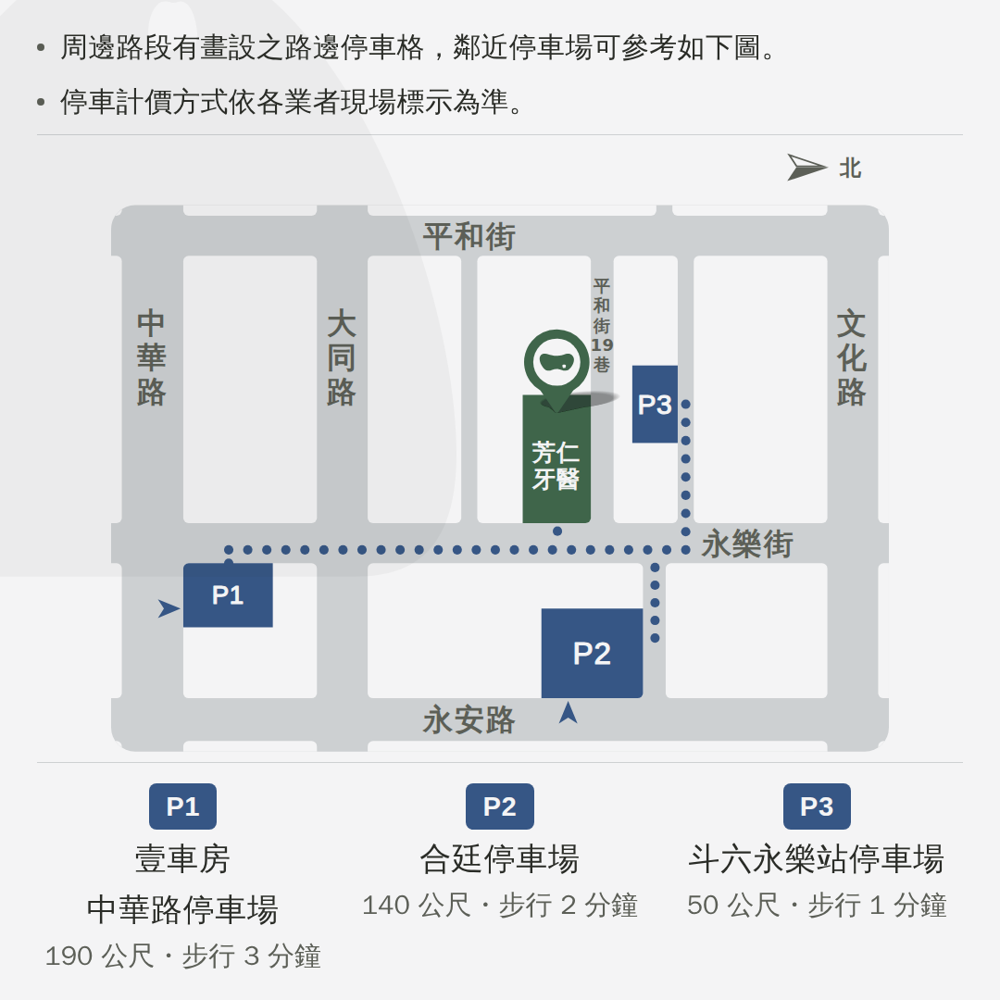
Ⓛ4 ＝ r2c2（762×572）——第一顆不是正方的，橫過去比較開。
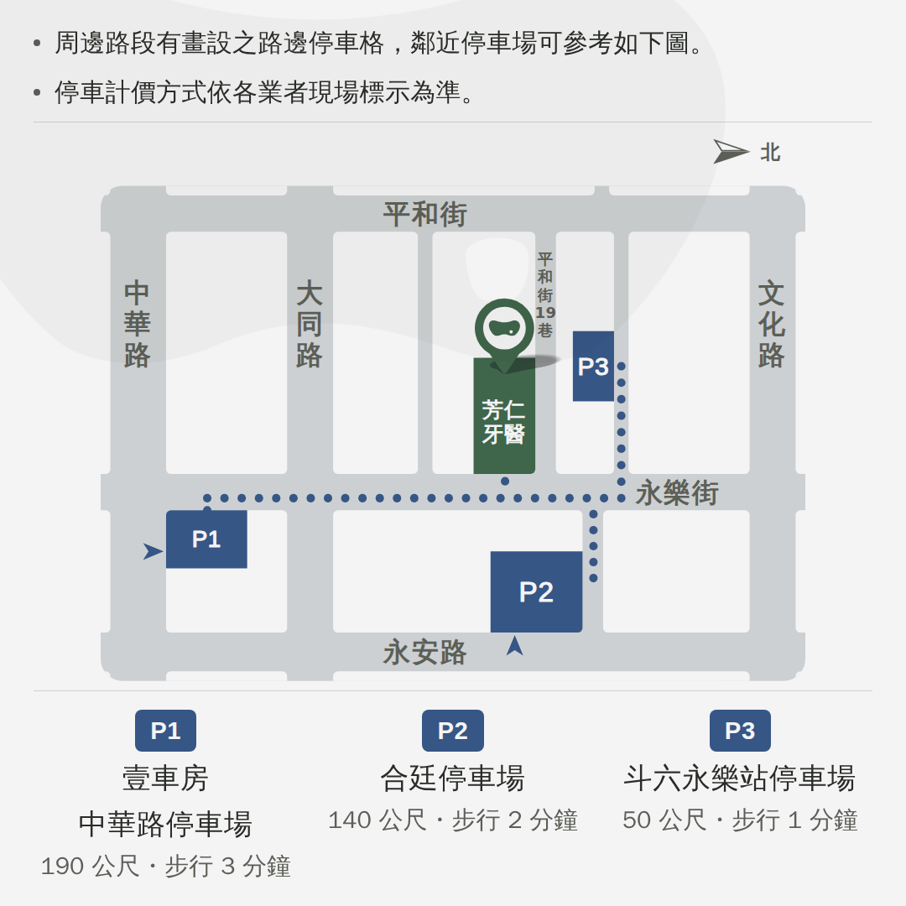
Ⓛ5 ＝ r1c2 ＝ 站上頁首那顆（952×469）——最扁，讀起來是 一條橫過上緣的軟帶子。Ⓛ1 就是上面那幾張。
② 浮水印要多淡要挑門診表那一張是 5%
| 哪一格 | 墨 | 底色 | 壓在上面的柔墨 |
|---|---|---|---|
| Ⓦ1 ＝ 門診表那張 | 5.0% | #eaeaeb | 5.66 |
| Ⓦ2 | 4.0% | #ececed | 5.68 |
| Ⓦ3 現在這樣 | 3.0% | #eeeeef | 5.76 |
| Ⓦ4 最淡 | 2.0% | #f0f0f1 | 5.80 |
你說「可能要更淡一點」，所以預設先給 Ⓦ3（3%）。
⚠ 對比度不是這一格的判準：最濃的 Ⓦ1 壓在上面，柔墨仍有 5.66（門檻 4.5），
四格沒有一格會讓字讀不到——這一題純粹是「看起來舒不舒服」。
產生器仍然有一道守門在算，掉到 4.5 以下會直接停下來。
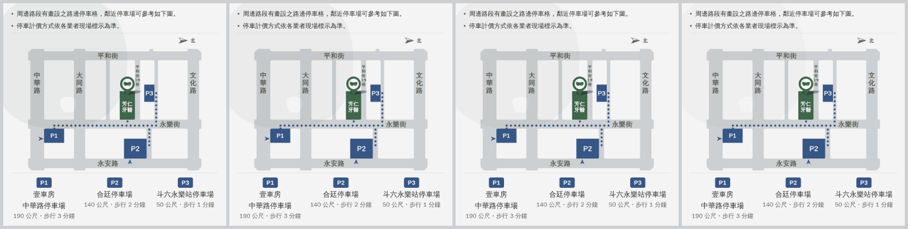
左起 Ⓦ1／Ⓦ2／Ⓦ3／Ⓦ4，在小格的實際大小（410px）上比。
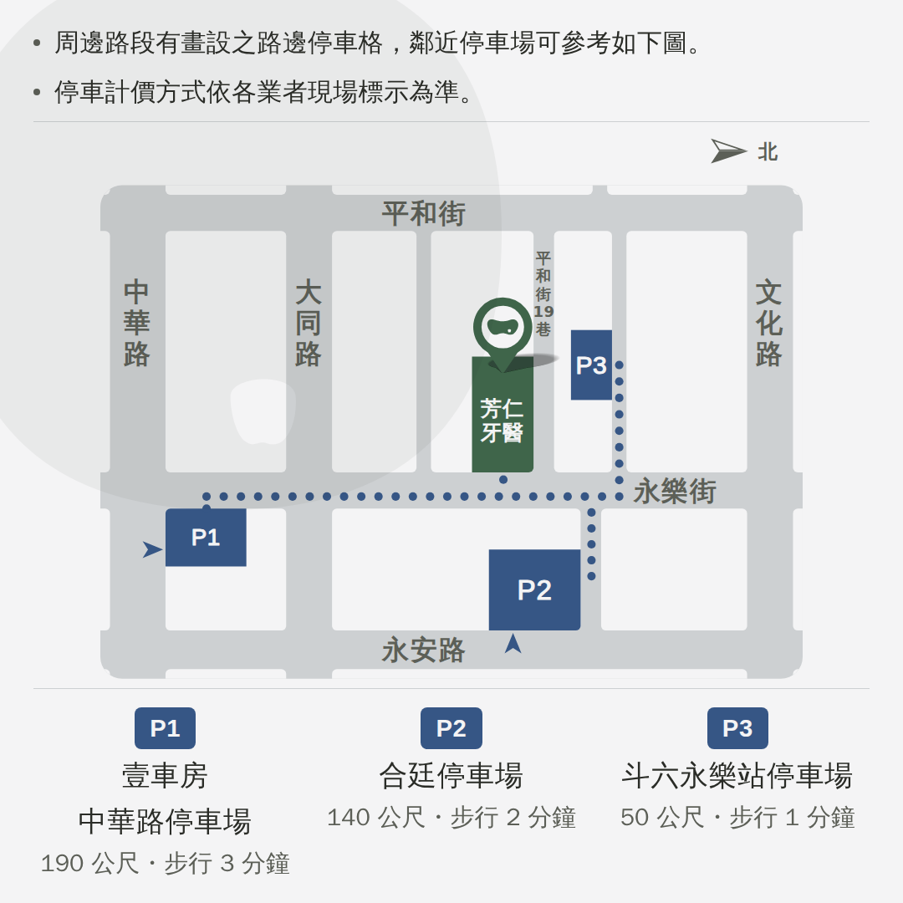
Ⓦ1 ＝ 5%，和門診表那一張同濃度。
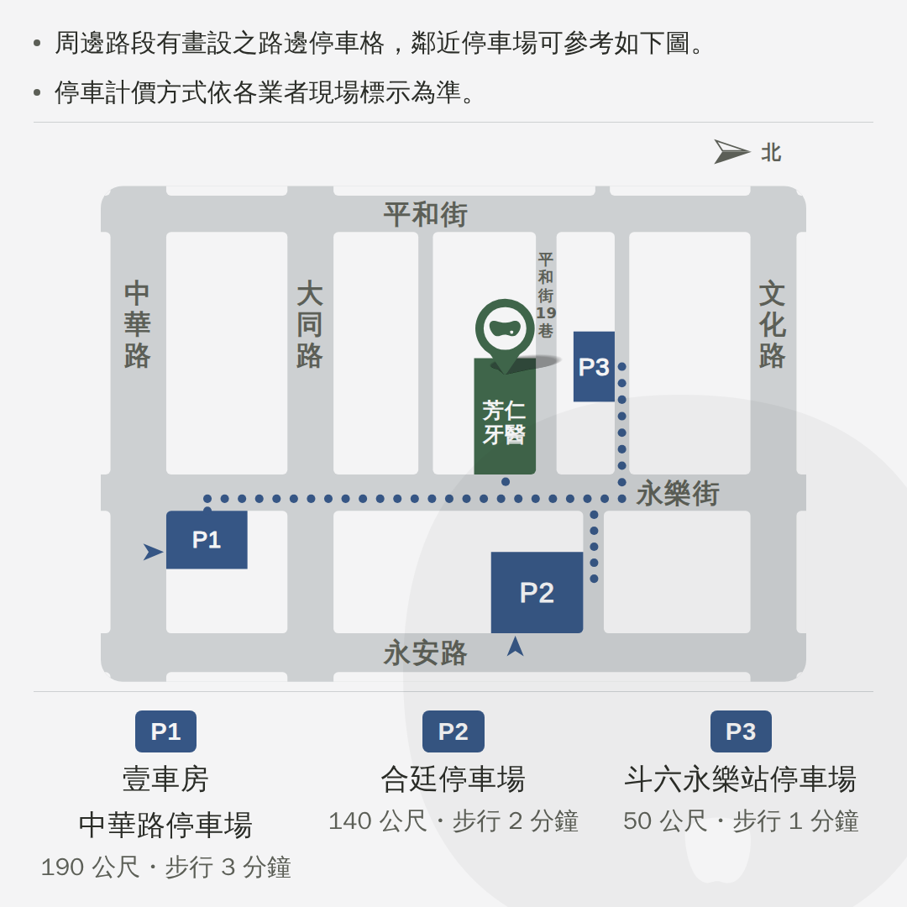
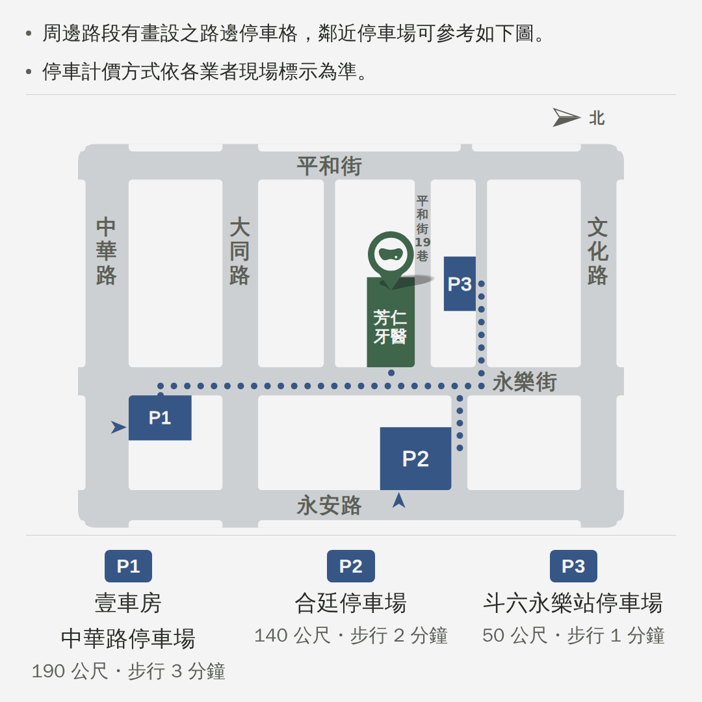
Ⓦ4 ＝ 2%（最淡）、Ⓦ2 ＝ 4%，以及完全不放（最後那一張）。
③ 壓哪一角留著當對照，左上是你指定的
右下（＝門診表那一張的位置）。它壓在三張停車場卡上—— 那正是這張圖唯一要逐字讀的地方，所以換到左上。上面每一張都已經是左上。
拿掉的是這兩句門口那張告示本人一個字都沒有動
留下來的是後兩句（路邊停車格與如下圖／計價依現場標示）。
⚠⚠ 產生器不是照順序砍前兩條：它會檢查砍掉的那兩句真的含著「紅線」「開單」、
留下來的那兩句真的沒有，對不上就停下來——
這樣門口那張哪天改了字或換了順序，這裡不會靜靜地砍錯句子。
⚠ 「詳情」那一欄也跟著拿掉同樣兩句（見最底下）——
圖上寫兩句、詳情寫四句，就是同一則貼文有兩個版本的事實。
要不要加一行標題door-c-title・地圖 910×711

那兩句一拿掉，整張圖第一眼看到的就是
「周邊路段有畫設之路邊停車格」——沒有人知道這是誰家的。
加一行標題「芳仁牙醫 周邊停車」就解掉，代價是地圖從 998 收到 910（小 9%）。
⚠ 主頁三格是三格一起看的：上面那格已經寫著芳仁牙醫的門診表，
所以不加也說得過去。這一格是給你挑的，我沒有自己加上去。
以下是紀錄走到定案之前的幾格，留著日後要回頭比

拿掉兩句、碼留著（地圖 752×587）。碼在小格上一顆都掃不出來，見下面那張表。

你原本指名的那一版：四句 ＋ 三顆碼，地圖只剩 602×470 ——不到定案那張的一半。

四句 ＋ 不放碼（地圖 858×670）——定案是在這一格再拿掉兩句。

逐字照門口那張（綠塊寫「現在位置」）。留著看原樣，不建議用。

碼收小到 140px 想換地圖大一點——兩頭空：地圖只大 15%， 而碼連在原圖上都掃不出來了。

⚠⚠ 北在上是代價的展示不是候選：那時地圖變成直的（0.61）， 塞進同一個高度只剩 286px 寬。 門口那張把地圖轉 90 度，正是這一版在方畫布上贏的地方。
⚠⚠⚠ 那三顆 QR 真的掃得動嗎不是用眼睛看，是拿解碼器掃過
| 哪一張 | 碼多大 | 每格 | 掃到幾顆 |
|---|---|---|---|
| 200px・原圖 1080 | 200px | 4.88px | 3/3 |
| 200px・大格 823 | 152.4px | 3.72px | 0/3 |
| 200px・小格 410 | 75.9px | 1.85px | 0/3 |
| 140px・原圖 1080 | 140px | 3.41px | 0/3 |
| 140px・大格 823 | 106.7px | 2.6px | 0/3 |
| 140px・小格 410 | 53.1px | 1.3px | 0/3 |
每一顆是 41×41 格（含四格靜區）。
① 在小格上一顆都掃不出來（每格只有 1.85px）——而小格正是這一張要去的地方。
② 碼收小到 140px，連原圖都掃不動——「把碼縮小、讓地圖大一點」這條路走不通。
⚠⚠ 大格那一列這一輪從 3/3 變成 0/3：碼一樣大（每格 3.72px，本來就在解碼器的邊緣），
是 Ⓜ3 把那一排往下挪了一點、縮圖的取樣就跟著換了。結論沒有變，只是更難看了。
⚠ 順帶把那三顆碼拉到浮水印前面——碼上面不可以壓任何東西，
而且壓了畫面上看不出來，只有拿解碼器掃才知道。
⚠⚠⚠ ③ 更根本的一件：看貼文的人正拿著那支手機，掃不了自己螢幕上的碼。
門口那張是紙，人站在前面用手機掃，成立；貼文是螢幕，同一支手機掃不了自己。
LINE 上真正接得住這件事的，是「詳情」欄裡那三條可以點的網址（見下一段）。
「詳情」那一欄要貼的字⚠ 這裡才是 QR 在 LINE 上的替代品
兩句提醒逐字取自門口那張（紅線與開單那兩句已經跟著圖一起拿掉）；
三條網址逐字取自 index.html 地圖上那三個連結
（你自己分享過、驗證會開對地方的那三條），
順序照你排的 P1／P2／P3（刻意不是照距離）。
⚠ 「可參考如下圖」指的是貼文上面那張圖，成立；
所以圖裡的版面鎖住「文字在上、地圖在下」，不要把地圖搬到旁邊或最上面。
⚠⚠ 不可以寫「有問題留言問我們」那一類的話（這個帳號沒有專人即時回覆）。
二、站上那張簡易地圖的版本 2026-09-08 稍早做的，留著對照
地圖是站上那張簡易地圖本人（1:1 截下來），
三個停車場全亮、各自帶著牌子與步行時間。
⚠ 和上面那一版最大的差別：地圖是直的（左右各留 179px），
而且沒有 P1 P2 P3 的號碼牌——停車場的名字與距離是畫在地圖上的牌子裡。
Ⓕ 三塊全亮標題 46／頁尾 32・地圖 642×711

站上一次只亮一塊（那是手機一格放不下三塊牌子的解），
貼文放得下就攤開。永樂站那塊牌子往左挪了 50——
兩塊之間要空出 2×11（牌子自己的內距），而且尾巴要留在它自己那塊 P 上。
⚠ 左右各留 179px 是結構性的：地圖是直的（0.903）、畫布是方的，
把四周空白裁掉反而更瘦（→0.724），要滿版就得上下切掉 111 個單位以上、
永樂站與壹車房都會不見。


左＝Ⓕ／中＝字大一階／右＝字小一階。
其餘幾格頁尾、只亮一塊、標題、沒有標題

頁尾不放停車那一句，地圖 642 → 686。 ⚠ 那一句是這一版唯一在 410px 讀得出「有停車位」的地方，建議留著。

只亮壹車房（＝站上開頁的樣子）。畫面乾淨， 但最近的那一個（走路 1 分鐘）就這樣不見了。


字大一階 54/38（地圖 606×671）／字小一階 40/28（地圖 664×736）。 ⚠ 字和地圖在搶同一塊高度。


標題換一句（芳仁牙醫位置與停車／怎麼走・哪裡停車）、 以及沒有標題（地圖 712×788，但主頁上那一格就不會自我介紹了）。
這一版的「詳情」
還沒決定的
① 要不要加那一行標題（door-c 還是 door-c-title）。
② 檔名——挑定了就改成拿得出去的名字
（看診時間那張是 fangren-hours-1080.png，這一張會是
fangren-map-1080.png）。
③ 小格右那一格（主題與科別七科）還沒做——七張分享圖現成，
但都是 1.91:1，要重裁成方的。
④ 小格到底是不是照這樣裁——在後台按一次「預覽」就知道，我們是照 410×410 推的。
三、給外縣市／鄰近鄉鎮看的路線圖2026-09-08 新開，還沒定案
你說的那一張：不一樣的 scale、給周圍鄉鎮或外縣市的人看，
巷弄一條都不標（外地人不是認巷弄），改成標鐵路、國道、省道、車站，
再加沿路看得到的大東西。
⚠⚠ 所以它不是把停車那張放大縮小，是另一份資料——
那一張回答「到了斗六停哪裡」（180 公尺的尺度），這一張回答「怎麼到斗六」（13 公里）。
| 看診時間 | 位置與周邊停車 | 這一張 | |
|---|---|---|---|
| 回答的問題 | 什麼時候有診 | 到了斗六停哪裡 | 怎麼到斗六 |
| 尺度 | — | 180 公尺 | 13 公里 |
| 巷弄 | — | 要（那就是它的工作） | 一條都不要 |
| 看的人 | 本地 | 已經到斗六了 | 還在外縣市 |
⭐ 建議far-mid國道１＋國道３＋台３＋鐵路，右下角開一個市區小圖
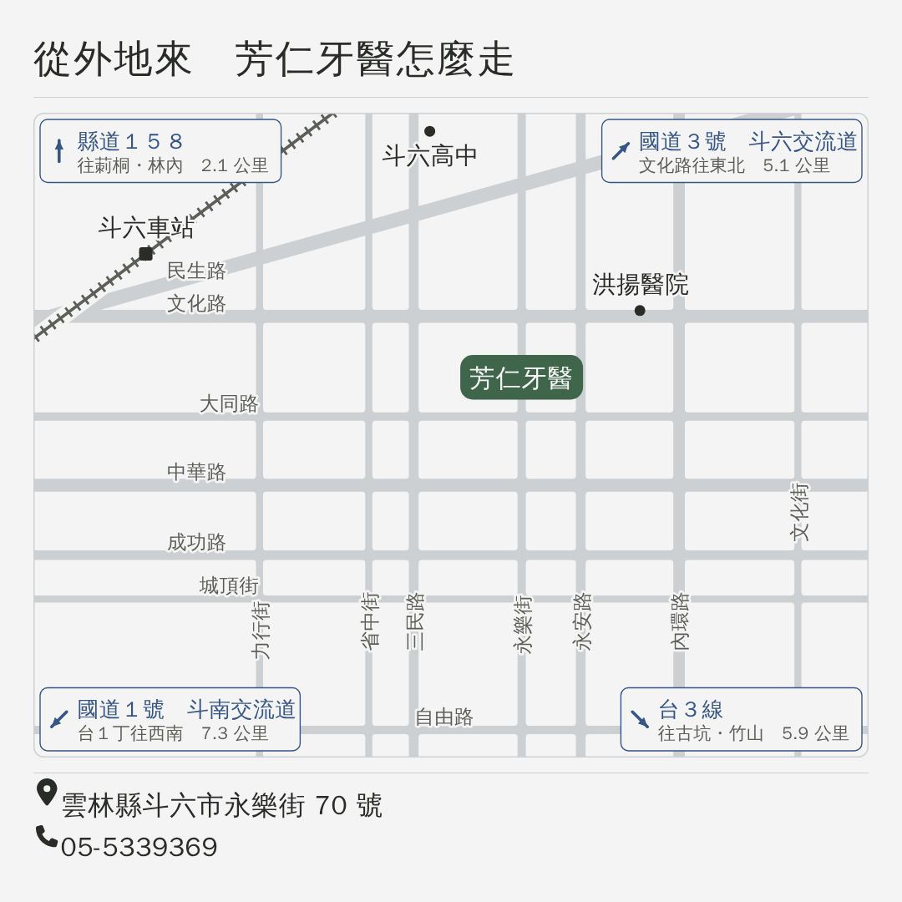
四條連外道路 ＋ 鐵路 ＋ 兩個交流道 ＋ 診所，右下角開一個市區放大的小圖。
⚠ 範圍是算出來的不是給半徑：把要畫的東西框起來、自己算比例尺
（第一版用「以診所為中心 ＋ 半徑」，畫出來上面空了三分之一）。
在主頁三格上長怎樣大格＝看診時間 小格左＝停車 小格右＝這一張
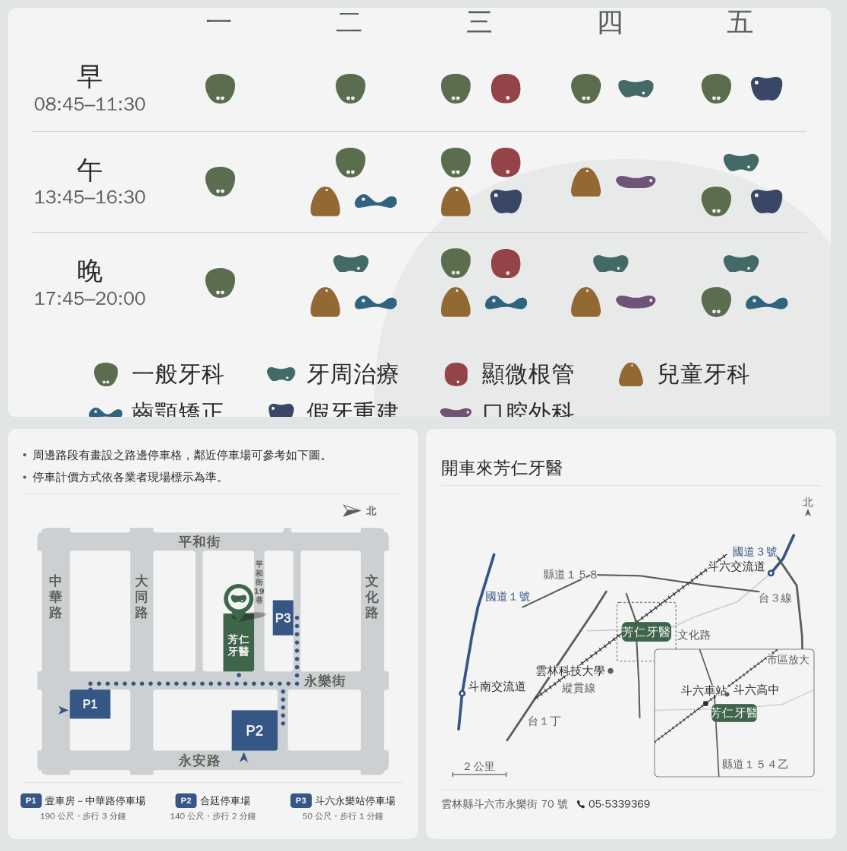
⚠⚠⚠ 三格已經滿了。34-4 那一節把小格右排給了「主題與科別七科」，
所以這一則要放哪一格是你要決定的——見最底下那一題。
⚠ 兩張小圖並排其實很合理：左邊「到了停哪裡」、右邊「怎麼過來」，
剛好是外地人心裡的兩個問題。
⚠⚠ 在小格的實際大小（410px）這一排才是判準
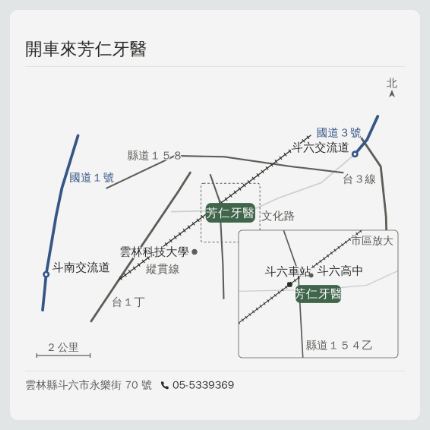
路名 11px、地標名 11.4px、
診所 11.8px、地址與電話 10.6px
——每一項都剛好過 10px 那條線，一個都沒有餘裕。
⚠⚠ 小格只有 0.3796 倍，所以 1080 的畫布上任何要讀完的字都不可以小於 27px。
這張圖因此幾乎沒有「小字」可以用——那是量出來的限制，不是排版偷懶。
⚠⚠⚠ 六個公家機關還沒有位置，所以一個都沒有畫上去
你列了八個：車站與斗六高中在你給的截圖上，量得到；
其餘六個（圓環、斗六派出所、中華電信斗六服務中心、元大銀行斗信分行、斗六家商、雲林縣政府）一個都不在那兩張截圖上，
而這台機器連不出去（Google／OSM 都被擋掉，403），所以我查不到。
⚠⚠⚠ 我沒有憑印象把它們擺上去。一個擺錯位置的地標，比沒有那個地標更糟
——外地人會照著它轉錯彎。產生器現在遇到沒有座標的地標會直接停下來，不會偷偷畫。
要補很簡單：給我一張 Google 地圖截圖（把這六個搜出來、都在同一個畫面裡），
或直接講「它在哪條路上、在哪個路口附近」。我改一個資料檔就重畫，版面不用動。
⚠⚠ 但先看這張表——你列的八個裡，只有車站是廣域尺度的
| 地標 | 離診所 | 小格 410px 上離診所 | 畫在哪一層 |
|---|---|---|---|
| 斗六車站 | 616 公尺 | 16.5px | 市區小圖 |
| 斗六交流道 | 5140 公尺 | 137.7px | 廣域 |
| 斗南交流道 | 7254 公尺 | 194.3px | 廣域 |
| 斗六高中 | 406 公尺 | 10.9px | 市區小圖 |
| 雲林科技大學 | 1982 公尺 | 53.1px | 廣域 |
⚠⚠⚠ 斗六高中在小格上離診所只有 10.9px、車站 16.5px。
圓環、派出所、中華電信、元大銀行、家商都在同一個市區裡，
七個地標會全部疊在直徑 40px 的一團裡——名字一個都讀不出來。
所以這一張開了「市區放大」那個小圖：一張圖裝不下兩個尺度，
古典解就是在同一張圖上開一個小窗。市區那一層的地標全部住在裡面。
⚠ 小圖的範圍寫死成以診所為中心的 3.2 公里見方，不跟著「現在有哪幾個地標」浮動
——不然那六個一補進來，你上一輪看過的那一張就不算數了。
不開小圖會怎樣對照far-nolens
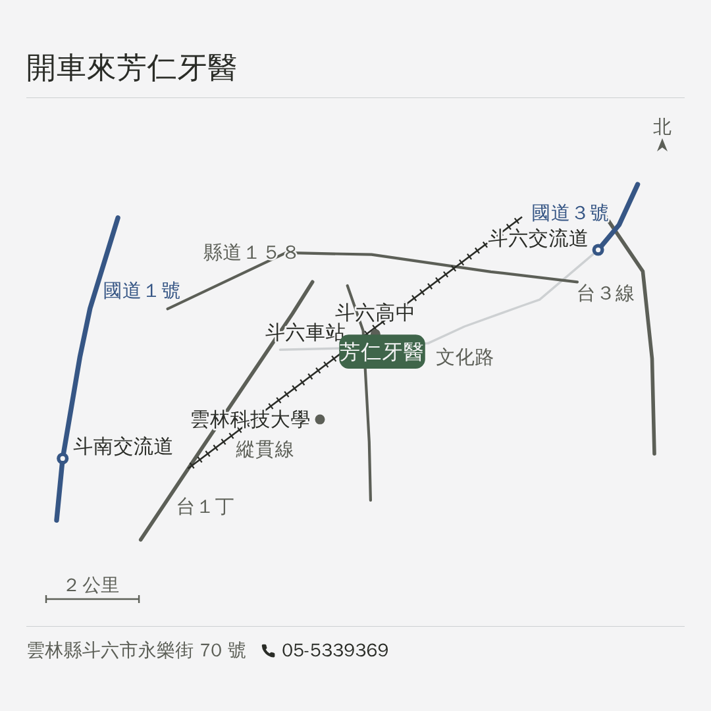
市區那幾個地標全部回到中間那一撮，現在只有三個就已經在互相碰。 再加六個就是一團墨。
範圍要到哪裡要挑
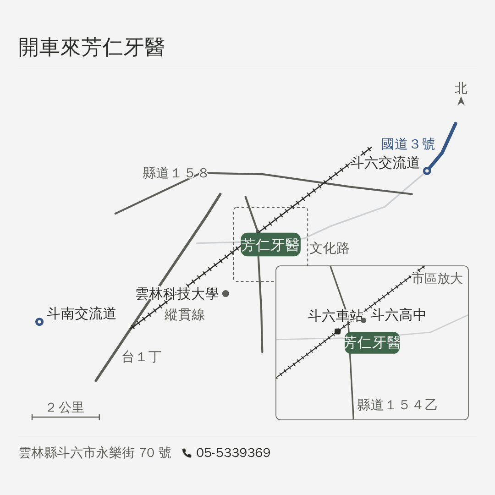
Ⓑ 收小：只到斗六市區與國道３交流道（國道１不在圖上）。 從西邊來的人看不到自己的入口。
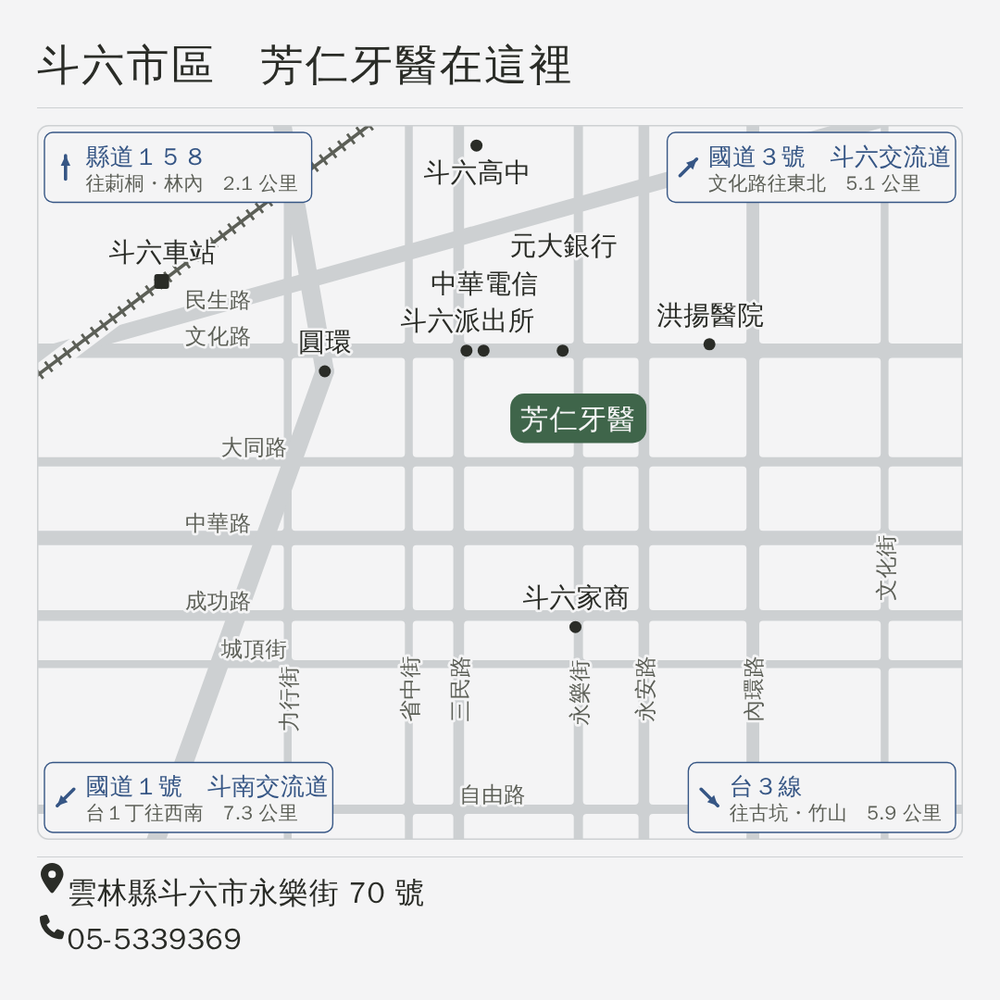
Ⓒ 再收：只有市區、沒有國道——那就變成第二張停車圖了， 不建議（這一張存在的理由就是國道與省道）。
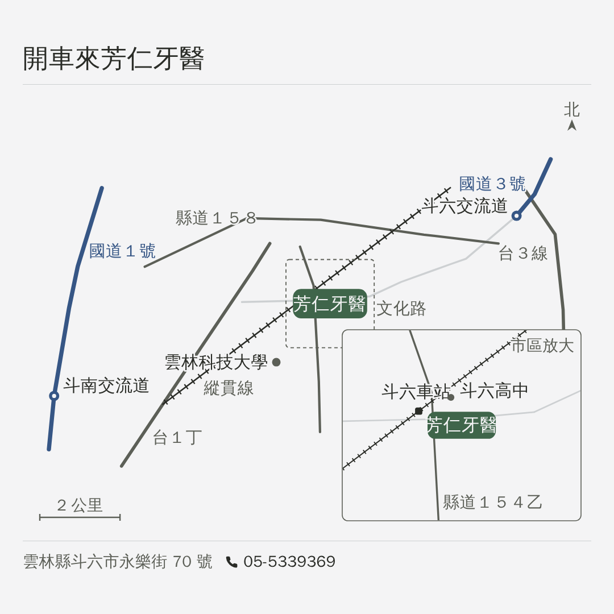
Ⓓ 多一條縣道１４９甲（往東南）。它不是連外道路， 加上去只是讓右下角更擠，也不建議。
地標怎麼放要挑
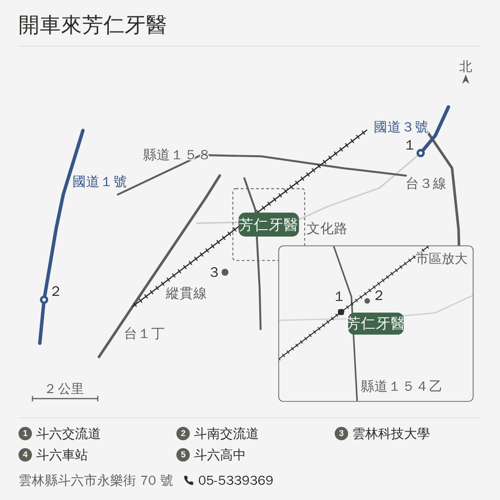
號碼 ＋ 底下列清單——地標一多就得走這條路（圖上只放①②③， 名字排在底下一行一個）。六個補進來之後這一格會變成建議， 現在只有五個還不必。
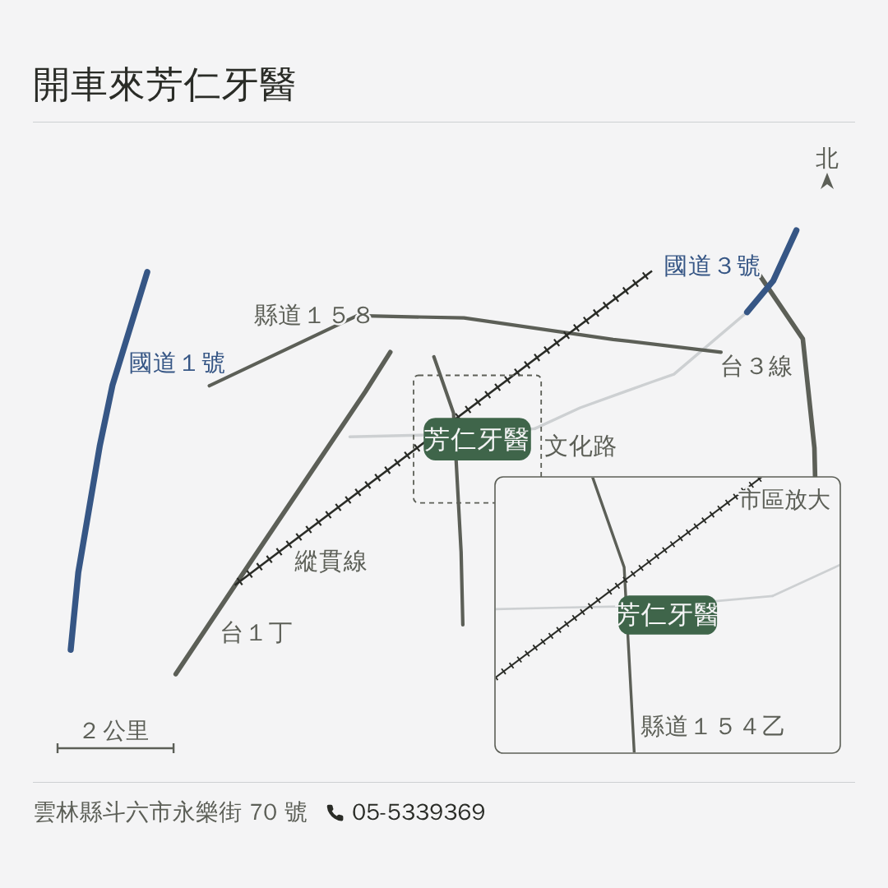
不放地標——最乾淨，但就少了你說的那件事 （沿路的參考點）。留著當下限。
字級與標題要挑
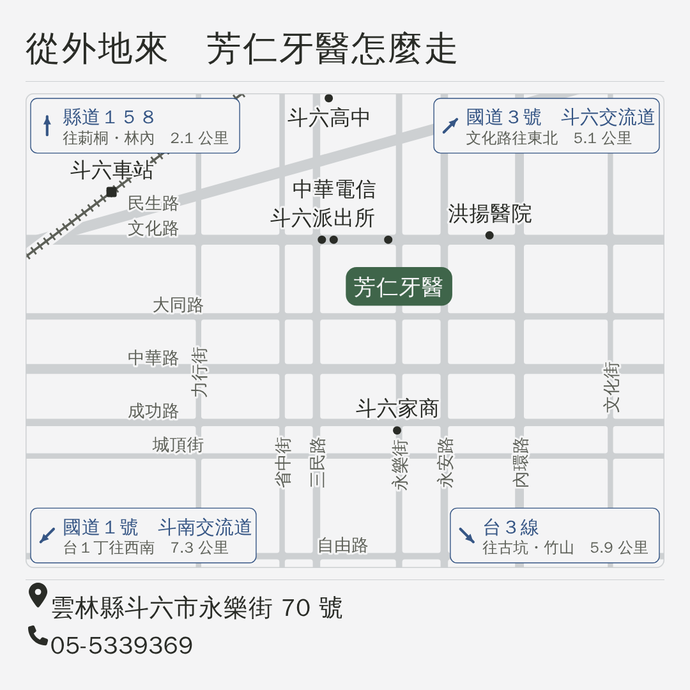
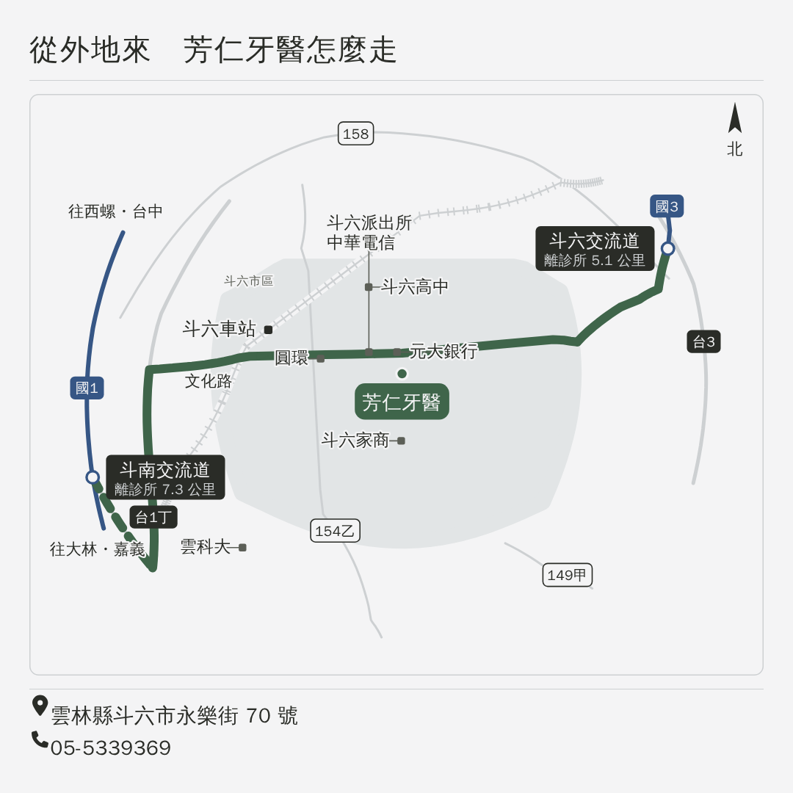
字大一階（×1.15）：路名 12.1px、地址 11px，讀起來鬆很多，
代價是地圖要讓出空間。
字小一階（×0.87）：比例尺 9.1px 已經掉到 10px 以下——這一格是下限的展示，
不是候選。

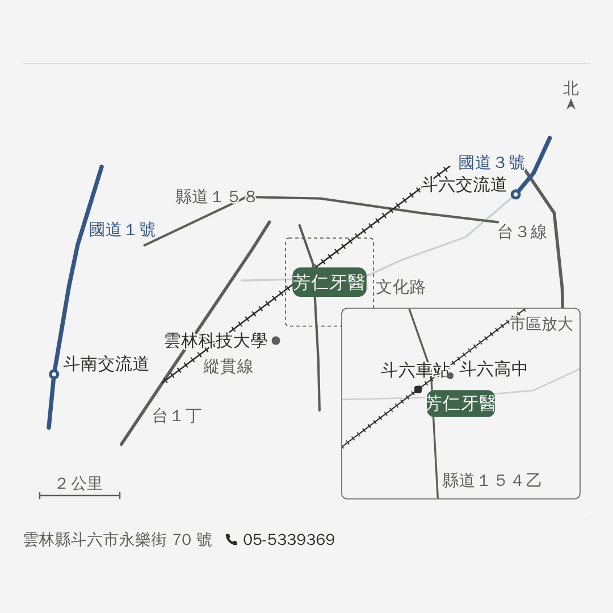
標題換一句（「怎麼到芳仁牙醫」）、以及沒有標題 （地圖大一點，但主頁上那一格就不會自我介紹了）。
⚠ 圖上每一樣東西的出處
這張圖不是描 Google 地圖描出來的街道圖，是示意圖：
每一條路收成兩三個轉折點，方位與相對位置對得上，形狀不對。
外地人要的是「從哪裡下來、走哪一條、經過什麼」。
⚠ 地理資料只有一個出處：drafts/channels/far-map.json，
而那一份是從你給的那兩張截圖描出來的（比例尺是拿「診所↔斗六車站」回推的；
鐵路的方位另外驗過，北偏東 53 度，和斗六→石榴的真實經緯度算出來的 52.9 度對得上）。
⚠⚠ 有兩處我自己也不確定，寫在那一份檔案的 note 裡：
國道３與台３線在斗六東北角交叉，截圖上兩條都掛著「3」的標誌，
哪一條是哪一條要再確認；斗南交流道的確切位置截圖上沒有標。
這一版的「詳情」
要你決定的
① 那六個公家機關的位置——給我一張截圖或一句話就好（見上面那一段）。
② 這一則要放哪一格：三格已經被門診表（大格）與停車圖（小格左）佔滿，
小格右原本排給「主題與科別七科」。三條路：
擠掉七科／當第四則（主頁上要滑才看得到）／換掉停車那一張
（不建議——那一張回答的是完全不同的問題）。我的建議是擠掉七科：
七科那一張還沒做，而「怎麼過來」是外地人第一個問題。
③ 範圍、地標怎麼放、字級、標題——上面每一格都擺出來了。
④ 檔名——挑定了就改成拿得出去的名字（會是 fangren-route-1080.png）。
⚠ 六個地標補進來之前不會有定稿檔，守門擋著。